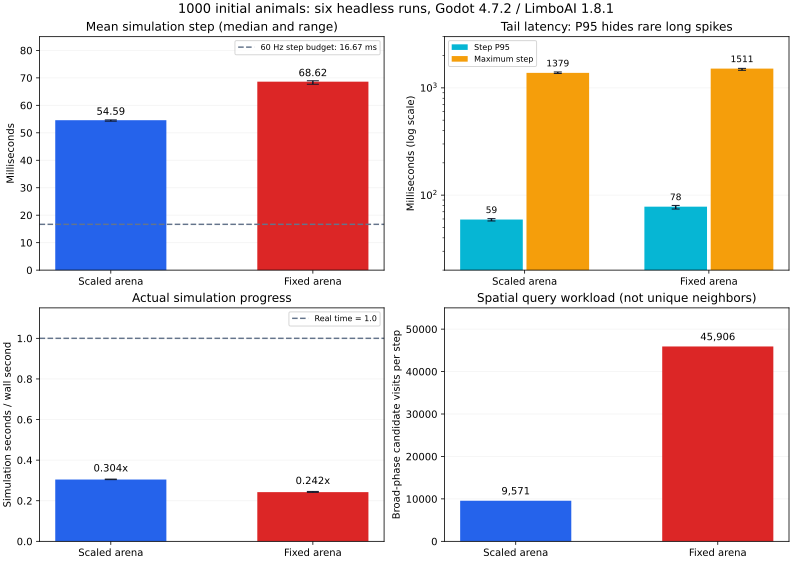

?????? CSV ? ???? CSV ? Profiler ????

1000 Entity ?????? ?? ????? 1000 ?????????CPU ??????? 60 Hz? ???????????????? 54.59 ms?????? 68.62 ms????? 25.7%? ??????????????????? 30.4% ? 24.2%? ????????????? 1.36?1.52 ??????? ??????????????????????????????????????? ????????? GPU???? LimboAI ?????????? 1. ???????? ????????????????? 1000 ???????scaled ???fixed ??? ??????? Profiler????????????? 1337????? 3 ?????? 30 ?? ???? 60 Hz?process ????????????? 30.23?30.92 ?? Godot 4.7.2-stable official?hash ed1daf0bf001b61586d9930840f2f1394092c079?LimboAI v1.8.1? ????? liblimboai.windows.editor.x86_64.dll?SHA256? f9e758ebf088da12e71dbe330572fb55f186619bda8b144b4d8e822569161b97? CPU?Intel Core Ultra 9 275HX?????????? GPU ????? ??????????????????????????????????? ?????? 870 ??87 ??43 ???????????? RNG ????? ??? uniform_v1 ??????????????????????????? scaled???? 2436.44?1370.50?18 ???432 ??? fixed??? 1280?720?5 ???120 ???????????? ????????????????????????????????????????? scaled ???????????????????????? ??????????????????? [???, ???]?? P95 ?????????????? P95 ?????????????? P95? ?????????????????????????????????????????? 2. ???? ?????ms? scaled: 54.592 [54.230, 54.695] fixed : 68.623 [67.668, 68.945] ?? P95?ms? scaled: 59.228 [57.426, 60.354] fixed : 78.111 [74.222, 80.152] ?????????ms? scaled: 1379.015 [1362.936, 1405.285] fixed : 1510.926 [1456.525, 1518.130] ???????ms? scaled: 43.947 [43.942, 44.421] fixed : 58.172 [57.764, 58.362] ?????ms? scaled: 7.837 [7.803, 8.100] fixed : 7.847 [7.430, 7.883] ????????ms? scaled: 2.471 [2.451, 2.545] fixed : 2.604 [2.474, 2.699] ??? / ??? scaled: 0.304 [0.304, 0.306] fixed : 0.242 [0.241, 0.246] ?????? scaled: 9.333 [9.200, 9.333] fixed : 7.333 [7.333, 7.600] ???????? scaled: 274.648 [274.648, 274.918] fixed : 654.214 [653.763, 655.643] ??????? scaled: 34.847 [34.836, 34.847] fixed : 70.218 [70.142, 70.257] ????????? scaled: 213.000 [213.000, 213.000] fixed : 623.000 [623.000, 623.000] ?????? scaled: 38.000 [38.000, 38.000] fixed : 72.000 [72.000, 72.000] 60 Hz ????? 16.67 ms?????????????? 3.28 ? 4.12 ?? ????????? HUD??????????????? ??? process ???????? 2.28 Hz / 1.82 Hz??????? FPS? Godot ?? process ??????????????????????????? ?????? 1000 ?????? scaled ????????? 997???? 908??????? 89???? 9.20?9.33 ???? fixed ????????? 999???? 951?955??????? 44?48???? 7.33?7.60 ???? scaled ?????? 117?118?fixed ? 2???????????? ???????????? 1000 ??????????????? 1000 ???????? ?????????????????????????????????????? 3. ????????? ??????????????????????? scaled 81.0%?fixed 84.8%? ???????????????????????????????????????????? ??????? 14.5% / 11.4%??????? 4.5% / 3.8%? ?????? GameplayEngine.simulate_step???????????simulation_stepped ???HUD ???? scaled ??? 275 ????????? 35 ??????????? 9571 ?? fixed ??? 654 ????????? 70 ??????????? 45906 ??????? 4.8 ?? ???????????????????????????????????????? ??????????????????????????????????????????????? ?????????????????????????????????????? 4. ???? Profiler ?? ???????????? fixed / 1000 ?????????? 1 ?????? 1 ?? ?????? 1.279 ??16 ??????? 0.267 ????script_profiler_active=true? ????? BEGIN PROFILING??????????????????????? ????????????????????????????????????????? ??????????? 2567 ms?? SheepdogController._choose_protection_anchor?Inclusive 1431 ms?Self 19 ms?43 ?? SheepdogController._anchor_score?Inclusive 1398 ms?Self 643 ms?37410 ?? AnimalController.is_live?Self 208 ms?? 162 ??????????????? ?? 37410 = 43 ? ? 870 ???????????????? ?? _anchor_score ??? 43 ?????? 161 ???????? ???????????? O(?? ? ???)?????????????????????? ?????????????????????????????? ????????????????????? 669 ms?????????? SheepController.perceive?Inclusive 258 ms?Self 160 ms?6960 ?? SheepController._scan_neighbors?Inclusive 76 ms?Self 65 ms?870 ?? SheepdogController.perceive?Inclusive 116 ms?Self 64 ms?344 ?? WolfController.update_hunt?Inclusive 82 ms?Self 11 ms?696 ?? WolfController._prey_weight?Inclusive 53 ms?Self 53 ms?2884 ?? AnimalController.decide?Inclusive 73 ms?Self 69 ms?8000 ?? EntityService.get_nearby_indices?Inclusive 26 ms?Self 24 ms?5460 ?? ??? Inclusive ???????????????? ????????????????? 2 ???????????????? ????????????????????????????????? ???????????????????????????????? ????????????????????????????????? 60 Hz? 5. ?????????? ??? 1????????????????????? ??????????????????????????? ???????????????????????????????????????? ??????????????????????????????????????? ?????????????????? O(S?D?) ?? O(S?D)? ??????/?????????????????????????????????????? ???????????????????????? RNG ?????????? 2 ??????? ?????????P95 ???????????????????????????? ??? 2??????????????????? ????????????????????????????????? ????????????????????????????????????????????? ???/?????????????????????????????????????? ?????????????????????????????????????? ??????????????????????????????????? ????????????????????????????? Self ???????????? ??? 3????????????????? ???????????????????????????????????????????? ???????????????????????????????????????????? ???????????????????/???????????????????????????? ?????????????????????????????????????? ???????????????????????????????????? Self ??? fixed ?????? 2 ????????????????????????????????? ???????????????????????????????? ?????????????????????????????????? ??????????????????????? ???????? ECS?????Compute Shader ???????????? 6. ??????? ?????????????????????????????????? ??????? FPS/GPU ????? on/off ????? 5 ???????????? ?????????????????????????????????????? ?? Profiler ????????????????????? ??????????? CFG ????????????????????????? ?????? 77 ?????? 7 ???????????????????????? ??? 1000-runs.csv?????????????????? 1000-summary.csv????????????? 1000-profile-pilot.log / 1000-profile-snapshots.csv??? Profiler ????????? 1000-performance.png / .svg????????? source-hashes.json / validation.txt????????????? study-status.json????????????????????????? ?????????? scaled #1 mean=54.23 ms P95=59.23 ms max=1379.02 ms sim/wall=0.3065 alive=997->908 output/performance/2026-11-13T13-39-24_281412_458658_uniform_v1_1/result.json scaled #2 mean=54.69 ms P95=57.43 ms max=1362.94 ms sim/wall=0.3038 alive=997->908 output/performance/2026-11-13T13-39-58_262484_435487_uniform_v1_1/result.json scaled #3 mean=54.59 ms P95=60.35 ms max=1405.29 ms sim/wall=0.3044 alive=997->908 output/performance/2026-11-13T13-40-33_26444_612815_uniform_v1_1/result.json fixed #1 mean=68.94 ms P95=80.15 ms max=1518.13 ms sim/wall=0.2412 alive=999->955 output/performance/2026-11-13T13-52-44_140956_574643_uniform_v1_1/result.json fixed #2 mean=67.67 ms P95=74.22 ms max=1456.53 ms sim/wall=0.2458 alive=999->951 output/performance/2026-11-13T13-53-19_258724_511974_uniform_v1_1/result.json fixed #3 mean=68.62 ms P95=78.11 ms max=1510.93 ms sim/wall=0.2423 alive=999->952 output/performance/2026-11-13T13-53-54_68956_559202_uniform_v1_1/result.json